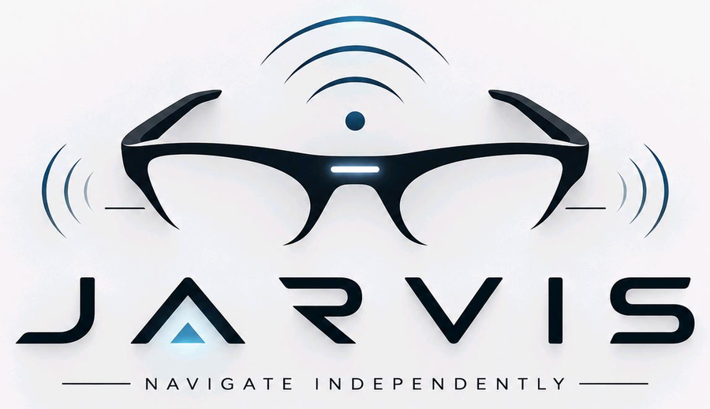

Awareness, at a glance.A quick guide to the glasses prototype: three distance sensors detect nearby obstacles, haptics provide alerts, and a triggered camera can add context. The companion app is called JARVIS Companion.
03 distance sensors02 vibration motors01 camera module

JARVIS · PROJECT FIELD GUIDE · 001
01 / Component map
Know your hardware.
Sensors 01 and 03 face out from the sides; sensor 02 points forward from the bridge. Select a marker for details.
Front view · component locations01 / 03 face sideways
Tap a marker to inspect each part Selected component
02 / Concept model
See JARVIS in 3D.
Drag the model to orbit it. Sensor 02 faces forward; sensors 01 and 03 face outward from the left and right sides.
Interactive hardware conceptDrag to rotate · scroll to explore page